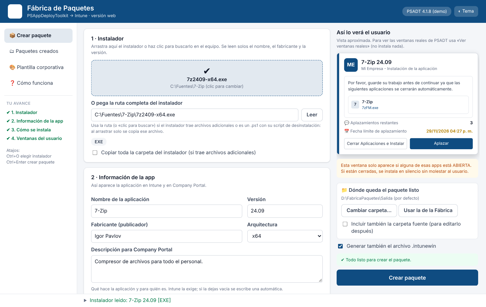
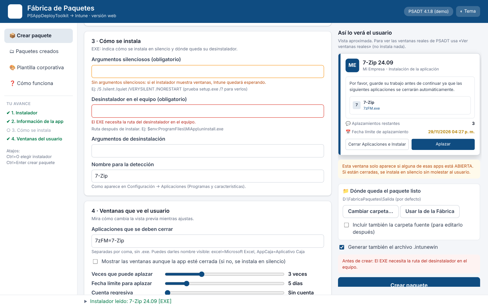
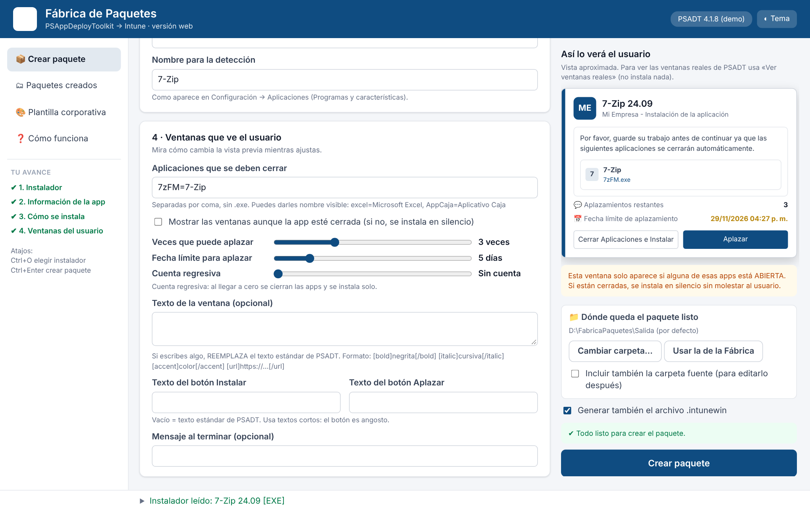
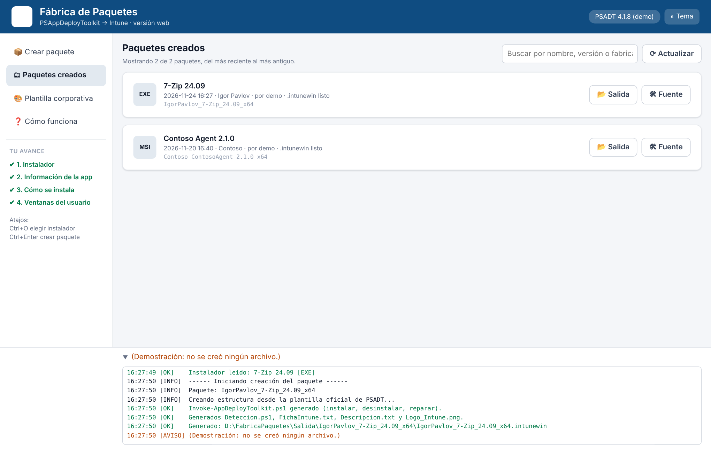
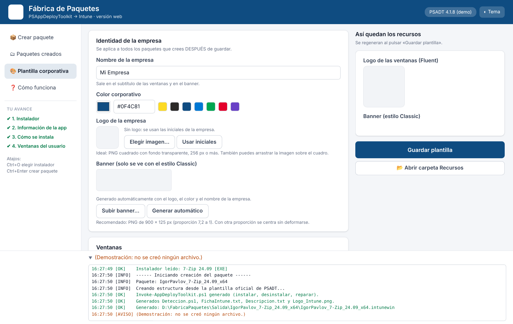

Manual de la Fábrica de Paquetes
1. Qué es
La Fábrica de Paquetes convierte un instalador MSI, EXE o un script PS1 en un paquete de PSAppDeployToolkit (PSADT) 4.x listo para subir a Intune como aplicación Win32. No hay que escribir código: los datos del instalador se leen solos y la herramienta arma el script de despliegue, la detección, el .intunewin y una ficha con todo lo que hay que configurar en Intune.
Tiene dos formas de uso, con las mismas funciones:
- Versión web (
Crear-Paquete-Web.cmd): se abre en Edge. Es la que aparece en las imágenes de este manual. - Versión de escritorio (
Crear-Paquete.cmd): una ventana de Windows con las mismas secciones y botones.
2. Requisitos
- Windows 10 u 11 con Windows PowerShell 5.1 (viene con Windows).
- No necesita permisos de administrador para crear paquetes.
- PSAppDeployToolkit 4.x: la Fábrica lo busca sola (ver la sección 4).
IntuneWinAppUtil.exe: ya viene en la carpetaHerramientas.- Para la versión web: Microsoft Edge (o el navegador por defecto).
3. Descargar y abrir
1Descarga el ZIP desde la página de la Fábrica (botón Descargar todo).
2Desbloquea el ZIP antes de descomprimirlo: clic derecho sobre el archivo → Propiedades → marca Desbloquear → Aceptar. Así Windows no muestra avisos de seguridad con cada archivo.
3Descomprime en una carpeta del equipo de empaquetamiento, por ejemplo D:\FabricaPaquetes. Evita el Escritorio y %TEMP%, que suelen tener restricciones de AppLocker.
4Abre con doble clic:
| Archivo | Qué abre |
|---|---|
Crear-Paquete-Web.cmd | La versión web en Edge. Se abre también una ventana negra: no la cierres, es la Fábrica. Para terminar, pulsa Cerrar Fábrica en la página. |
Crear-Paquete.cmd | La versión de escritorio. |
La carpeta queda así:
FabricaPaquetes\ ├── Crear-Paquete.cmd ← escritorio ├── Crear-Paquete-Web.cmd ← versión web ├── Nuevo-Paquete.ps1 ← la herramienta ├── LEEME.md ├── Manual_Fabrica_de_Paquetes.pdf ├── Herramientas\ ← IntuneWinAppUtil.exe (+ módulo PSADT) ├── Recursos\ ← plantilla corporativa (se crea sola) ├── Paquetes\ ← carpeta editable de cada paquete └── Salida\ ← lo que se sube a Intune
4. La primera vez
Al abrirla por primera vez, la Fábrica:
- Busca el módulo PSADT en este orden: la carpeta
Herramientas, el módulo instalado en el equipo y, por último, la PowerShell Gallery si hay Internet. Si lo descarga, queda guardado enHerramientas. - Crea la plantilla corporativa en
Recursos, con un logo y un banner generados con las iniciales de la empresa.
Save-Module -Name PSAppDeployToolkit -Path C:\Temp\PSADT y copia C:\Temp\PSADT\PSAppDeployToolkit dentro de Herramientas.Después, revisa la plantilla corporativa (nombre de la empresa, color y logo) antes de crear el primer paquete.
5. Crear un paquete
La pantalla Crear paquete tiene cuatro tarjetas a la izquierda y la vista previa a la derecha. En el menú lateral, Tu avance marca con ✔ cada paso completo.

Tarjeta 1 · Instalador
Arrastra el .msi, .exe o .ps1 a la zona punteada, o haz clic para buscarlo. En la versión web también puedes pegar la ruta completa y pulsar Leer.
.ps1 con su script de desinstalación, usa el clic o pega la ruta.Si el instalador necesita otros archivos de su carpeta, marca Copiar toda la carpeta del instalador.
Tarjeta 2 · Información de la app
Nombre, versión y fabricante se llenan solos; revísalos. Escribe la Descripción para Company Portal (si la dejas vacía se escribe una automática). El logo de la app se toma del ícono del EXE o puedes elegir una imagen; si marcas Mostrar este logo en las ventanas, aparece también en las ventanas de PSADT.
Tarjeta 3 · Cómo se instala
Los campos cambian según el tipo de instalador (ver la sección 6). Lo que falta se marca en rojo y los avisos en naranja; encima del botón Crear paquete aparece un resumen.

Tarjeta 4 · Ventanas que ve el usuario
Configura lo que ve la persona en su equipo. La vista previa de la derecha cambia mientras ajustas. Detalles en la sección 7.

Panel derecho: crear
- Dónde queda el paquete listo: por defecto en
Salida. Con Cambiar carpeta… puedes elegir otra, incluso una carpeta de red. Se recuerda para la próxima vez. - Incluir también la carpeta fuente: copia la carpeta editable del paquete junto a la salida.
- Generar también el archivo .intunewin: déjalo marcado.
- Ver ventanas reales: muestra las ventanas de PSADT con tu configuración sin instalar nada. Si no indicaste apps a cerrar, abre el Bloc de notas para mostrar la lista.
- Crear paquete y luego Abrir salida.
Atajos: Ctrl+O elegir instalador · Ctrl+Enter crear paquete · F5 ver ventanas reales (escritorio).
6. Qué llenar según el tipo
| MSI | EXE | PS1 | |
|---|---|---|---|
| Nombre, versión, fabricante | Automático | Automático | Nombre automático; versión 1.0.0 (cámbiala) |
| Argumentos | Opcional (PROPIEDAD=valor). El modo silencioso lo pone PSADT. | Obligatorio en la práctica: argumentos silenciosos (/S, /quiet, /VERYSILENT…) | Opcional |
| Desinstalador | No aplica | Obligatorio: ruta en el equipo después de instalar, por ejemplo $env:ProgramFiles\App\uninstall.exe | Opcional: tu Desinstalar.ps1 (se detecta solo) |
| Detección en Intune | Código de producto del MSI | Nombre en Programas y características y versión | Marca de registro que crea el paquete |
Scripts PS1: se copia toda la carpeta del script, y tu script debe terminar con exit 0 si todo salió bien. El paquete deja la marca HKLM\SOFTWARE\<Empresa>\Paquetes\<App> con la versión; se borra al desinstalar.
7. Las ventanas del usuario
PSADT decide solo si muestra ventanas (modo Auto):
- Hay apps a cerrar y están abiertas → muestra la ventana completa.
- Hay apps a cerrar y están cerradas → instala en silencio, sin molestar.
- No hay nadie conectado → siempre en silencio.
Para que salgan siempre, marca Mostrar las ventanas aunque la app esté cerrada.
| Opción | Qué hace |
|---|---|
| Aplicaciones que se deben cerrar | Nombres de proceso separados por coma, sin .exe. Con nombre visible: excel=Microsoft Excel. |
| Veces que puede aplazar | 0 = no permite aplazar. Muestra «Aplazamientos restantes». |
| Fecha límite para aplazar | Días desde el primer intento en los que se puede aplazar. |
| Cuenta regresiva | Minutos; al llegar a cero se cierran las apps y se instala. |
| Texto de la ventana | Reemplaza el texto estándar de PSADT. Pulsa Enter para un salto de línea (no escribas `n ni \n: se verían tal cual). Admite [bold], [italic], [accent] y [url]. |
| Texto de los botones | Cambia «Instalar» y «Aplazar». Usa textos cortos. |
| Mensaje al terminar | Aviso que aparece cuando termina la instalación. |
8. Qué se genera
| Archivo | Para qué |
|---|---|
<Paquete>.intunewin | Se sube a Intune. |
FichaIntune.txt | Todo lo que hay que configurar en Intune: comandos, códigos de retorno, detección, requisitos y pruebas. |
Deteccion.ps1 | Script de detección. |
Descripcion.txt | Descripción para copiar y pegar. |
Logo_Intune.png | Logo de la app para Company Portal (512 px). |
Fuente\ (opcional) | Copia de la carpeta editable del paquete. |
La carpeta editable de cada paquete queda en Paquetes\<Fabricante_App_Versión_Arq>. Si necesitas ajustes que la Fábrica no hace (transformaciones .mst, varios instaladores, copiar licencias), edita ahí Invoke-AppDeployToolkit.ps1.
9. Paquetes creados
Lista los paquetes hechos con la Fábrica, del más reciente al más antiguo: fecha, quién lo creó y si tiene .intunewin. Tiene buscador y botones para abrir la Salida o la carpeta Fuente de cada uno.

10. Plantilla corporativa
Se configura una vez y aplica a todos los paquetes que se creen después de guardar. Los paquetes que ya existían no cambian: hay que volver a crearlos.

- Empresa y color: salen en las ventanas y en el banner.
- Logo: PNG cuadrado con fondo transparente, 256 px o más. Es el que se ve en el estilo Fluent.
- Banner: solo se ve en el estilo Classic. Recomendado: PNG de 900 × 125 px.
- Idioma, ruta de logs y valores por defecto de aplazamientos, cuenta regresiva y textos.
- Si alguien reemplaza a mano una imagen en
Recursos\Assets, la Fábrica la detecta al guardar y la conserva.
11. Probar y publicar en Intune
FichaIntune.txt trae los comandos exactos.psexec -s -i cmd cd /d D:\FabricaPaquetes\Paquetes\<Paquete> Invoke-AppDeployToolkit.exe -DeploymentType Install powershell -ExecutionPolicy Bypass -File D:\FabricaPaquetes\Salida\<Paquete>\Deteccion.ps1 Invoke-AppDeployToolkit.exe -DeploymentType Uninstall
La detección debe decir «Detectado» después de instalar y no detectar nada después de desinstalar.
Publicar:
- Intune → Aplicaciones → Windows → Agregar → Aplicación Windows (Win32) → sube el
.intunewin. - Copia los valores de
FichaIntune.txty subeLogo_Intune.pngcomo logo. - Asigna como Disponible a un grupo piloto; cuando funcione, pásala a Requerido.
12. Problemas frecuentes
| Qué pasa | Qué hacer |
|---|---|
| Las ventanas no aparecen al instalar. | Es normal si las apps a cerrar están cerradas (modo Auto). Marca «Mostrar las ventanas aunque la app esté cerrada» si las quieres siempre. |
| «No se pudo conseguir el módulo PSAppDeployToolkit». | El equipo no tiene Internet. Copia el módulo a Herramientas (sección 4). |
No se generó el .intunewin. | Falta Herramientas\IntuneWinAppUtil.exe. |
| «Ya existe el paquete…». | Ya hay un paquete con ese nombre y versión en Paquetes. Bórralo o cambia la versión. |
| Versión web: al hacer clic no aparece el buscador de archivos. | Quedó detrás del navegador: búscalo en la barra de tareas. |
| Versión web: «No hay conexión con la Fábrica». | Se cerró la ventana negra. Vuelve a abrir Crear-Paquete-Web.cmd. |
| Cambié el logo y los paquetes siguen con el anterior. | La plantilla solo aplica a paquetes nuevos: vuelve a crear el paquete. |
Windows bloquea los .cmd o el script. | Desbloquea el ZIP antes de descomprimir (sección 3) y usa una carpeta permitida por AppLocker. |
13. Seguridad
- Los
.cmdusan-ExecutionPolicy Bypasssolo para abrir la Fábrica en el equipo de empaquetamiento. Si la política lo exige, firma los scripts con el certificado interno. - La versión web solo escucha en
127.0.0.1(no acepta conexiones de otros equipos) y usa un código que cambia cada vez que se abre. Desde la página solo se abren carpetas de la Fábrica y de sus paquetes. - No pongas contraseñas ni tokens en los argumentos: quedan en los logs y en la caché de Intune.
- Los paquetes se ejecutan como SYSTEM: revisa el script generado antes de publicar.
- Usa solo la versión oficial de PSADT (PowerShell Gallery o el GitHub de PSAppDeployToolkit).
IntuneWinAppUtil.exeestá sujeto a los términos de licencia de Microsoft (PDF enHerramientas).